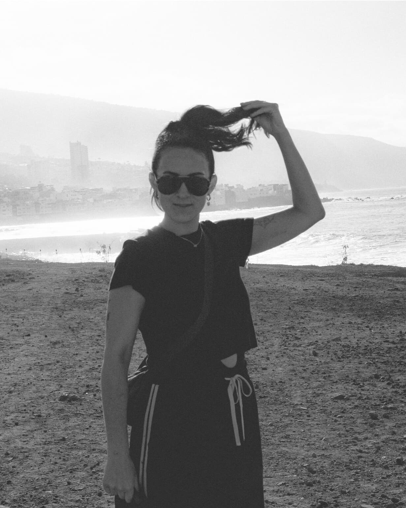

Julia Craig
About
Julia Craig is a writer from Tāmaki Makaurau, Aotearoa (Auckland, New Zealand) based in London. She writes cultural criticism, personal essays, and art criticism, and her work has appeared in The Spinoff, The Pantograph Punch, Art News, The Art Paper, and Ensemble.
She holds a Master of Public Policy and a Master of Arts in Art History from the University of Auckland. In 2025, she completed the Faber Academy's Creative Nonfiction course.
Essays
- The map of the tube on the wall – Takahē – 2025
- We need to get better at defending the arts – Ensemble – 2024
- They live among us: Celebrity spotting in my neighbourhood – Ensemble – 2024
- The case against tourism from a hypocrite living abroad – Ensemble – 2024
- No fury like a woman bored – The Spinoff – 2023
- The Lovecraft of Counter-Strategies: Localised Solutions for Online Hate and Disinformation – The Pantograph Punch – 2022
- Love thy trolls: What Pākeha can do about online racism – The Pantograph Punch – 2020
Art Criticism
- We Work Well Together, Review of Claudia Kogachi and Nova Paul at Phillida Reid – Contemporary Hum – 2024
- Review of Yona Lee – Art News Aotearoa – 2023
- Venereal Sacraments, Review of Owen Connors – The Art Paper – 2022